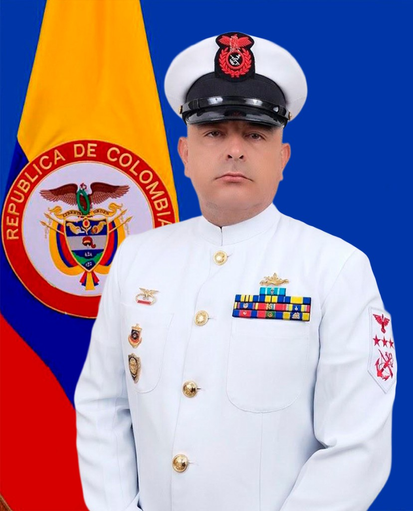

Armada Nacional de Colombia
Septiembre 2024 — Marzo 2026

Wilmar José Ibarra Abril
SMC · Fuerza Naval de la Amazonía
Trayectoria
Nacido el 17 de abril de 1976 en Cúcuta, Norte de Santander, y criado en el municipio de Salazar de las Palmas, Norte de Santander. Se incorporó como alumno de la Escuela de Guerra Anfibia (EGAN) el 3 de febrero de 1997 como integrante del curso N.° 69. Se graduó como Cabo Segundo de Infantería de Marina el 1 de diciembre de 1997. Se encuentra casado desde el año 2003 con la señora Oriana Birleth Quiceno Morales; hijos: Camilo Antonio Ibarra Quiceno y Lyann David Ibarra Quiceno.
Formación académica
- Técnico Profesional en Procedimientos Judiciales
- Tecnólogo en Entrenamiento y Gestión Militar
Unidades y cargos
- Batallón de Instrucción I.M. No. 40 Tumaco — Instructor
- Elemento 14 Combate Fluvial (Tres Esquinas, Caquetá) — Comandante de Bote
- Elemento de Combate Fluvial No. 60.04 — Comandante de Bote
- Grupo de Tarea Fluvial Conjunta (Omega) — Remplazante de pelotón
- Batallón de Instrucción de I.M. No. 1 — Sargento de pelotón
- Escuela de Formación de Infantería de Marina — Profesor Militar 4
- Comando de Infantería de Marina — Analista de operaciones
- Grupo Móvil de Entrenamiento Bogotá — Remplazante de Equipo
- Brigada de Infantería de Marina No. 1 — Coordinador operacional
- Batallón Fluvial de Infantería de Marina No. 41 — SP Compañía
- Batallón Fluvial de Infantería de Marina No. 41 — SM Batallón
- Brigada de Infantería de Marina No. 1 — SM Brigada
- Brigada de Infantería de Marina No. 1 — SM Planeación
- Brigada de Infantería de Marina No. 1 — SM Personal
- Brigada de Infantería de Marina No. 1 — SMC Brigada
- Fuerza Naval de la Amazonía — Asesor de Comando
Comisiones en el exterior
- Instructores en entrenamiento conjunto de operaciones fluviales — Guatemala
- Instructores del conjunto en operaciones fluviales Colombia–Estados Unidos — Panamá
- Secretario Naval en la Embajada de Colombia ante el Gobierno de Honduras — Tegucigalpa
Condecoraciones
- Medalla Servicios Distinguidos a la Infantería de Marina
- Medalla Servicios Distinguidos a la Escuela de Formación de Infantería de Marina
- Medalla por tiempo de servicio 15, 20 y 25 años
- Orden del Mérito Naval “Almirante Padilla”
- Medalla Fe en la Causa Ejército Nacional
- Medalla Servicios Distinguidos a la Armada Nacional
- Al Espíritu del Bicentenario Naval de la Armada Nacional
- Medalla “Fe en la Causa” del Comando General FF.MM.
Distintivos militares
- Distintivo Escuela de Formación de Infantería de Marina
- Distintivo Profesor Militar V y IV
- Citación Presidencial de la Victoria Militar y Policial
- Programa Integral para Suboficiales de Alta Jerarquía de las Fuerzas Militares